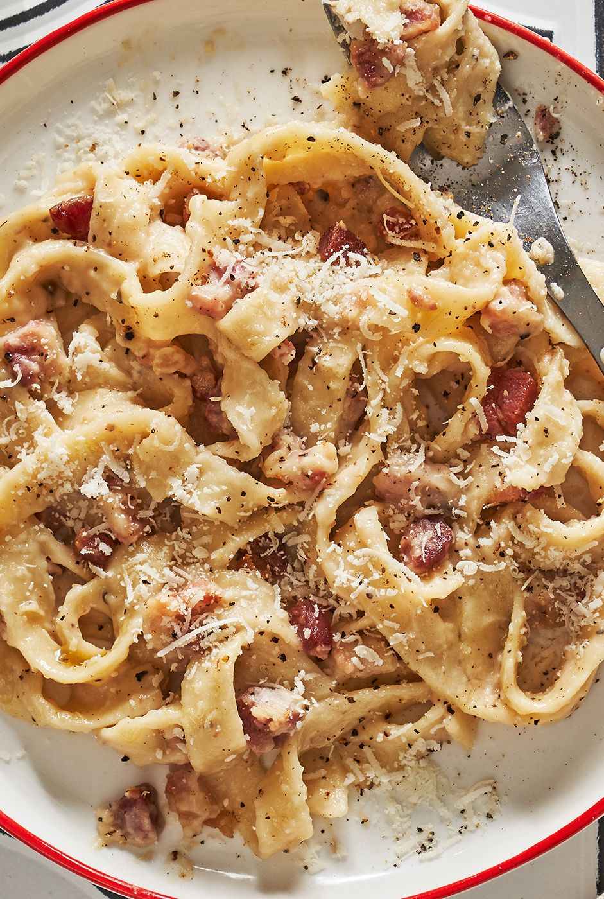

Pasta Alla Gricia

Discription
This recipe is Roman and very simple, but classic!! It's
like a sister recipe to cacio e pepe and carbonara, sans
the egg component and it's traditionally made with spaghetti
or rigatoni.
Ingredients
- 1/2 lb pasta of choice
- 2 tbsp olive oil
- 1 cup of diced guanciale (cured pork cheek)
- 1/2 cup reserved pasta water
- 1/2 tsp freshly ground black peppercorns
- 2 cups pecorino romano cheese, finely grated
Steps
- Bring a large pot of water to a boil and cook the pasta according to package instructions.
- Heat the olive oil in a pan on low-med heat and cook the diced guanciale until it starts to
brown and crisp, about 10 minutes.
- Remove the guanciale but leave the oil and grease and leave the heat setting on.
- Add the pepper to to the grease, then add 1/2 cup of pasta water and increase the
heat to medium until the pasta water boils. (It's important to use pasta water because
it's starchy and combines with the pork fat in order to create the luscious sauce.)
- Once the sauce starts to boil, add the cooked pasta, guanciale and almost all of the cheese -
reserve a little cheese for topping.
- Quickly mix everything together over the medium heat to melt the cheese into the pasta
water and pasta until combined. Don't be afraid to play with and adjust the ratio of
cheese:pasta water so that it's to your liking. (The key is to keep it hot so the
cheese stays melted and doesn't curdle.)
- Top with more cheese and black pepper before serving!